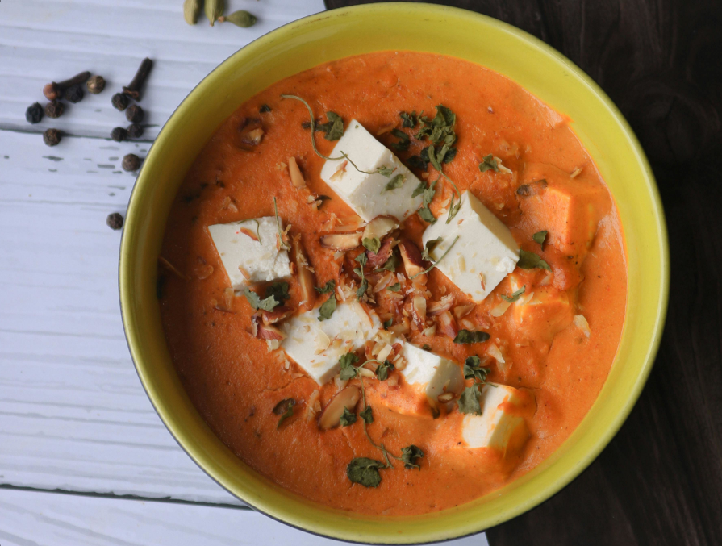

Paneer Butter Masala
Here is an image for you to see what the Paneer Butter Masala is going to look like once you have finished making it!

Description
Paneer Butter Masala, also known as Paneer Makhani or Butter Paneer, is a quintessential North Indian curry featuring soft cubes of Indian cottage cheese (paneer) simmered in a rich, creamy, and silky tomato-based gravy.
It is characterized by its vibrant orange-red color, velvety texture, and a mild, slightly sweet, and tangy flavor profile.
- Prep Time: 10 mins
- Cook Time: 20 mins
- Total Time: 30 mins
- Servings: 4
Ingredients:
- ½ cup vegetable oil
- ½ pound paneer, cut into ½-inch cubes
- 2 tablespoons butter
- 2 onions, finely chopped
- 1 teaspoon ginger paste
- 1 teaspoon garlic paste
- 1 tablespoon ground cashews
- 1 teaspoon ground red chiles
- ½ teaspoon ground cumin
- ½ teaspoon ground coriander
- ½ teaspoon garam masala
- 1 (8 ounce) can tomato sauce
- ½ cup half-and-half
- ½ cup milk
- ½ teaspoon white sugar
- ½ teaspoon salt
Steps:
- Gather all ingredients.
- Heat oil in a large skillet over medium heat; fry paneer in batches until golden, about 5 minutes.
- Transfer fried paneer to a paper towel-lined plate to drain, retaining vegetable oil in skillet.
- Melt butter in the same skillet over medium heat; cook and stir onion until golden brown, about 10 minutes.
- Add ginger paste and garlic paste. Continue to cook until fragrant, about 1 minute more.
- Stir cashews, ground red chiles, cumin, coriander, and garam masala into the onion mixture. Cook and stir for 1 minute.
- Stir tomato sauce, half-and-half, milk, sugar, and salt into spice mixture; simmer until thickened, about 5 minutes.
- Reduce heat to low. Add fried paneer and simmer until heated through, about 5 minutes more.
Are you searching for other recipes? You might find them here!